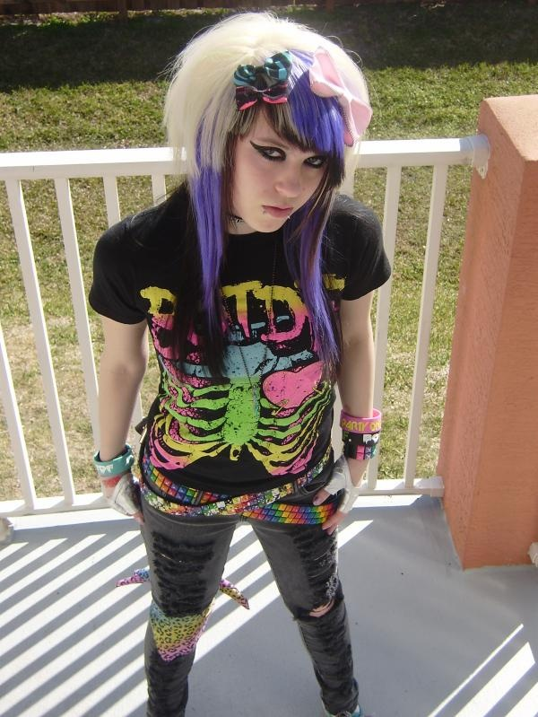

These hairstyles are the dream of any scene person. The haircut with the choppy layers and sweep of hair that covers an eye is done very well. Combining that with the dye job of multiple bright colors and pieces of hair with the raccoon tail really ties everything together.
-------------------------------------------------------------------------------------------------------------------------------------------------------------------------------------------------------------------------------------------------------
These colorful pony beads strung together in different patterns are called Kandi. They are a common accessory for putting together scene outfits. One thing is that you don't just wear a few bracelets or necklaces, instead you'd usually deck out your arms and neck in them. Kandi can come in many other forms as well like belt chains, bags, and even clothes.
-------------------------------------------------------------------------------------------------------------------------------------------------------------------------------------------------------------------------------------------------------
All scene outfits look something like these ones. As you can see, some staples of scene fashion are: skinny jeans, tutus, studded belts, tiaras, bows, kandi, graphic-tees, animal print, striped and checkerd patterns, and converse. Scene outfits are very busy looking with the mass amount of patterns, colors, and accessories they contain. Typical scene makeup is very similar to emo makeup with the black eyeliner and occasional smoked out eye shadow. The differnce is that while emo makeup is only black, scene makup can contain some colored eyeshadow to accompany the black eyeliner.